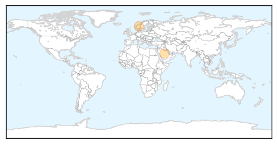
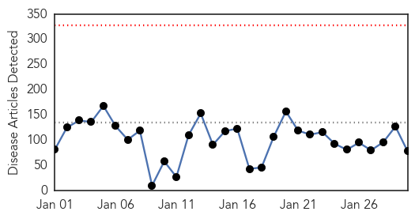
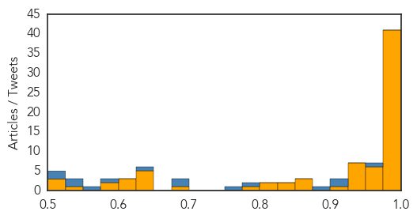

MERS
30-Day Web Trend
0 alerts, 0 warnings

30-Day Twitter Trend
0 alerts, 0 warnings

Article Locations
Article Confidences

Top Articles:
Top Tweets:
- 0.620
- Update on Middle East Respiratory Syndrome Coronavirus (MERS-CoV) infection for clinicians & public http://t.co/wyE3Ac7QxY
Ebola
30-Day Web Trend
0 alerts, 0 warnings

30-Day Twitter Trend
2 alerts, 0 warnings

Article Locations

Article Confidences
Top Articles:
- 1.000
- Suspected Ebola patient in California tests negative for virus
- 1.000
- New Ebola cases at lowest level in seven months: WHO
- 1.000
- Médecins Sans Frontières (MSF) International
- 1.000
- WHO: Ebola fight 'shifts to ending epidemic'
- 1.000
- “PPP’s key to fighting international epidemics” – Airtel MD
- 1.000
- Ebola Virus Mutated Since Outbreak
- 1.000
- AFAD delivers medical aid to Ebola-affected West Africa
- 1.000
- New Ebola cases lowest in seven months
- 0.999
- Despite Danger, Best US Minds Battle Deadly Virus
- 0.999
- Battle against Ebola enters a new phase
- 0.999
- Ebola response evolves amid slowing cases
- 0.999
- 2 Sacramento Area Patients Test Negative For Ebola
- 0.999
- Ebola at turning point as cases drop to lowest since June
- 0.999
- US Army Turns Its Best Minds Towards Ebola
- 0.999
- #Ebola infections in West Africa going down
- 0.999
- Weekly Ebola cases fall below 100
- 0.998
- Japan helps to fight Ebola
- 0.998
- MSF trims Ebola operation in Liberia, mum on trial drug
- 0.998
- Patient at UC Davis Medical Center being tested for Ebola
- 0.998
- Patient tested for Ebola at Calif.'s UC Davis hospital
- 0.998
- Secretary-General Tells Ebola Round-Table Meeting Outbreak Demonstrates Importance of Robust Health Systems for Interconnected World’s Stability, Safety - Sierra Leone
- 0.998
- Ebola Cases Plummet In West Africa, As Endgame Begins
- 0.996
- What worked in controlling the Ebola outbreak in West Africa
- 0.996
- IFRC Warns Complacency Could Set Back Ebola Progress
- 0.996
- What is the role of Africa?
- 0.996
- Ebola Vaccine Appears Safe, Triggers Immune Response, U.K. Study Finds
- 0.996
- Liberia delays school reopening by two weeks as Ebola cases fall
- 0.996
- Liberia delays school reopening by two weeks as Ebola cases fall
- 0.995
- Verbatim: Lessons from Ebola epidemic
- 0.995
- As Ebola 'fear factor' eases, African tourism edges back
- 0.990
- UC Davis Medical Center has possible Ebola case
- 0.989
- World Bank Group Ebola Response Fact Sheet (30 Jan 2015) - Sierra Leone
- 0.988
- Time to Look Ahead on Ebola
- 0.987
- Sacramento’s Ebola Readiness Does Little to Calm Nerves
- 0.987
- UPDATE 3-Suspected Ebola patient in California tests negative for virus
- 0.980
- Md. man set to be sentenced in fatal stabbing while on PCP
- 0.980
- 2 overnight fires in Maryland leave 2 in critical condition
- 0.980
- Garrett College student from Baltimore accused of stabbing classmates
- 0.980
- Girl, 11, pulled from Joppa fire in critical condition
- 0.980
- Family remembers a woman killed in Parkville
- 0.979
- Possible Ebola patient treated at UC Davis Medical Center
- 0.973
- Liberia Extends School Reopening by Two Weeks as Ebola Slides
- 0.973
- OXFAM GB CEO pays a courtesy call on President Ernest Bai Koroma « Awoko Newspaper
- 0.971
- Ebola Outbreak a New Case Study for Global Disaster Fundraising
- 0.970
- Gloucester Ebola guinea pig not worried about danger
- 0.965
- Second patient hospitalized in California undergoes Ebola testing
- 0.951
- US Surgeon General Makes 'House Call' In Springfield
- 0.946
- LDS Church continues its fight against Ebola
- 0.933
- Ebola Crisis and Humanitarian Response in Iraq - Sierra Leone
- 0.932
- News in the Humanosphere: WHO releases some exceedingly positive Ebola stats
Showing top 50 articles...
Top Tweets:
- 0.967
- People diagnosed with Ebola Virus Disease must be isolated immediately to prevent further spread of the infection. EBOLAFACT
- 0.923
- The early symptoms of Ebola Virus Disease closely resembles those of other diseases like the malaria and typhoid fever. EBOLAFACT
- 0.922
- Only a blood test can confirm the presence (or absence) of Ebola Virus Disease. EBOLAFACT
- 0.884
- To confirm if a person has Ebola Virus Disease blood samples are taken by health workers and tested in special laboratories. EBOLAFACT
- 0.784
- People who have been in contact with the infected person are also contacted and monitored for signs of Ebola over a 21-day period EBOLAFACT
- 0.758
- How is Ebola detected? EBOLAFACT
- 0.698
- CDC’s Team 5 Disease Detectives responded to the Ebola outbreak and set records in the process. Read more: http://t.co/dcaKoy8eN9
- 0.676
- RT: CDC’s Team 5 Disease Detectives responded to the Ebola outbreak and set records in the process. Read more: http://t.co/d…
- 0.642
- New map summarizing status and trajectory of Ebola outbreak in West Africa. http://t.co/VsNYncflb2
- 0.593
- [BBC] Ebola outbreak: Virus mutating scientists warn http://t.co/0dCc1oceft EBOLANEWS
- 0.566
- MT [DAILYMAIL] The Ebola virus is MUTATING and 'could become more contagious' http://t.co/9eR3rJMgqF EBOLANEWS
- 0.529
- 1st treatment centre specializing in care for Ebola infected pregnant women opens in Sierra Leone http://t.co/lASzEw2D4m
- 0.526
- CDC’s lab team in Sierra Leone helped in Ebola response as country experienced peak in cases. Listen to podcast: http://t.co/V0JVQD2HyO
- 0.523
- Update on Ebola outbreak in West Africa- January 2015 in: http://t.co/VsNYncflb2
- 0.514
- RT: Ebola virus disease *total* cases as of 2015 comapred to end of 2013 http://t.co/PjjTLKzgzX